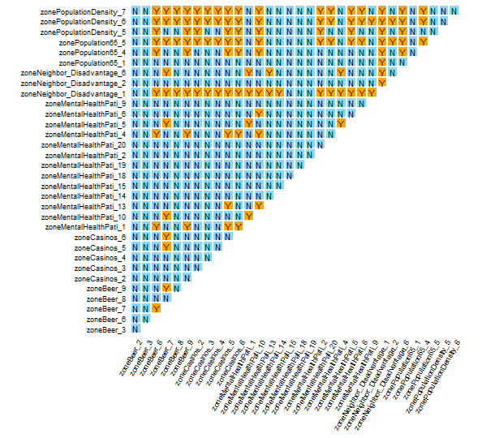
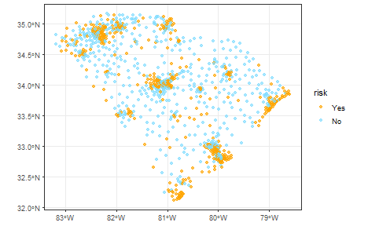

The IDSA model is based on the SPADE model, which extends the power of spatial determinant of the SPADE model to multivariable interaction and takes spatial fuzzy overlay into account.
In this vignette, we used the same data as the SPADE vignette to demonstrate the use of the IDSA model.
Load data and package
library(sf)
library(tidyverse)
library(gdverse)
depression = system.file('extdata/Depression.csv',package = 'gdverse') %>%
read_csv() %>%
st_as_sf(coords = c('X','Y'), crs = 4326)
depression
## Simple feature collection with 1072 features and 11 fields
## Geometry type: POINT
## Dimension: XY
## Bounding box: xmin: -83.1795 ymin: 32.11464 xmax: -78.6023 ymax: 35.17354
## Geodetic CRS: WGS 84
## # A tibble: 1,072 × 12
## Depression_prevelence PopulationDensity Population65 NoHealthInsurance
## * <dbl> <dbl> <dbl> <dbl>
## 1 23.1 61.5 22.5 7.98
## 2 22.8 58.3 16.8 11.0
## 3 23.2 35.9 24.5 9.31
## 4 21.8 76.1 21.8 13.2
## 5 20.7 47.3 22.0 11
## 6 21.3 32.5 19.2 13.0
## 7 22 36.9 19.2 10.8
## 8 21.2 61.5 15.9 8.57
## 9 22.7 67.2 15.7 17.8
## 10 20.6 254. 11.3 12.7
## # ℹ 1,062 more rows
## # ℹ 8 more variables: Neighbor_Disadvantage <dbl>, Beer <dbl>, MentalHealthPati <dbl>,
## # NatureParks <dbl>, Casinos <dbl>, DrinkingPlaces <dbl>, X.HouseRent <dbl>,
## # geometry <POINT [°]>Construct spatial Weight
We use the same spatial weight matrix as SPADE vignette.
wt = sdsfun::inverse_distance_swm(depression)IDSA modeling
tictoc::tic()
idsa.model = idsa(Depression_prevelence ~ .,
data = depression,
wt = wt, cores = 12)
tictoc::toc()
## 127.87 sec elapsed
idsa.model
## *** Interactive Detector For Spatial Associations
##
## | varibale | PID |
## |:---------------------------------------------------------------------------------------------------------------------------:|:---------:|
## | PopulationDensity ∩ Population65 ∩ Neighbor_Disadvantage ∩ Beer ∩ MentalHealthPati ∩ NatureParks ∩ Casinos ∩ DrinkingPlaces | 0.7544803 |
## | PopulationDensity ∩ Population65 ∩ Neighbor_Disadvantage ∩ Beer ∩ MentalHealthPati ∩ Casinos | 0.7467692 |
## | PopulationDensity ∩ Population65 ∩ Neighbor_Disadvantage ∩ Beer ∩ MentalHealthPati ∩ Casinos ∩ X.HouseRent | 0.7444095 |
## | PopulationDensity ∩ Population65 ∩ Neighbor_Disadvantage ∩ Beer ∩ MentalHealthPati ∩ NatureParks ∩ Casinos | 0.7433662 |
## | PopulationDensity ∩ Population65 ∩ Neighbor_Disadvantage ∩ Beer ∩ MentalHealthPati ∩ Casinos ∩ DrinkingPlaces | 0.7369004 |
##
## --------- IDSA model performance evaluation: --------
## * Number of overlay zones : 32
## * Percentage of finely divided zones : 0.003731343
## * Number of individual explanatory variables : 8
##
## ## Different of response variable between a pair of overlay zones:
##
## | zone1st | zone2nd | Risk |
## |:-----------:|:-----------:|:----:|
## | zoneBeer_10 | zoneBeer_11 | No |
## | zoneBeer_10 | zoneBeer_2 | No |
## | zoneBeer_10 | zoneBeer_3 | No |
## | zoneBeer_10 | zoneBeer_7 | No |
## | zoneBeer_10 | zoneBeer_8 | No |
##
## #### Only the first five pairs of interactions and overlay zones are displayed! ####
plot(idsa.model)
The risk detection outcomes, as determined by IDSA, can be graphically represented on a map.
idsa_risk = idsa.model$risk2
depression$risk = idsa_risk
ggplot(data = depression) +
ggplot2::geom_sf(aes(color = risk), alpha = .65) +
ggplot2::scale_color_manual(values = c("No" = "#7fdbff",
"Yes" = "#ffa500")) +
theme_bw()